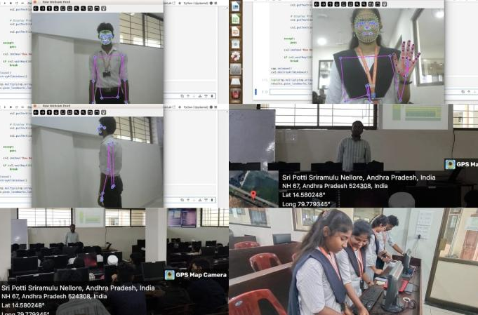
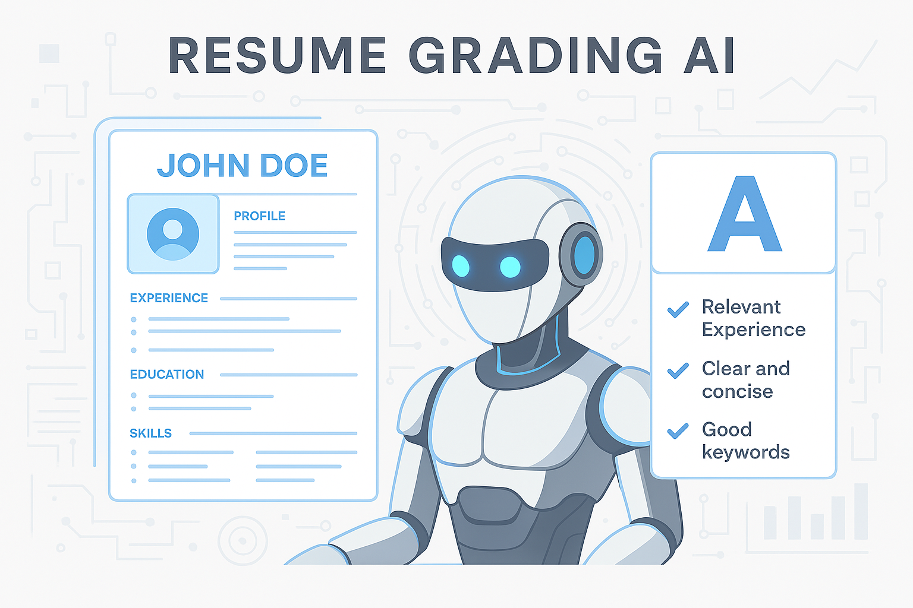

Nvidia Jetson Nano, Media Pipe, OpenCV, Python, USB Camera | July- 2024 Developed a project with real-time feedback using the Nvidia Jetson Nano Eagle 101, leveraging AI for health and fitness applications.
An interactive AI chatbot that uses Natural Language Processing (NLP) to simulate human-like conversations. It interprets user input using techniques like tokenization, lemmatization, and intent matching. This project helped me understand how conversational AI works under the hood using Python and NLTK.

A smart application that evaluates resumes against job descriptions and provides feedback or grading based on how well they match. It leverages Natural Language Processing (NLP) to compare keywords, skills, and relevance, offering an automated solution to manual resume screening.
Mental health support is essential, and even a basic AI-driven interaction can offer comfort or encourage users to seek help. This project shows your ability to build applications with both social value and technical relevance.Designed to promote mental well-being through empathetic interactions using basic NLP logic.